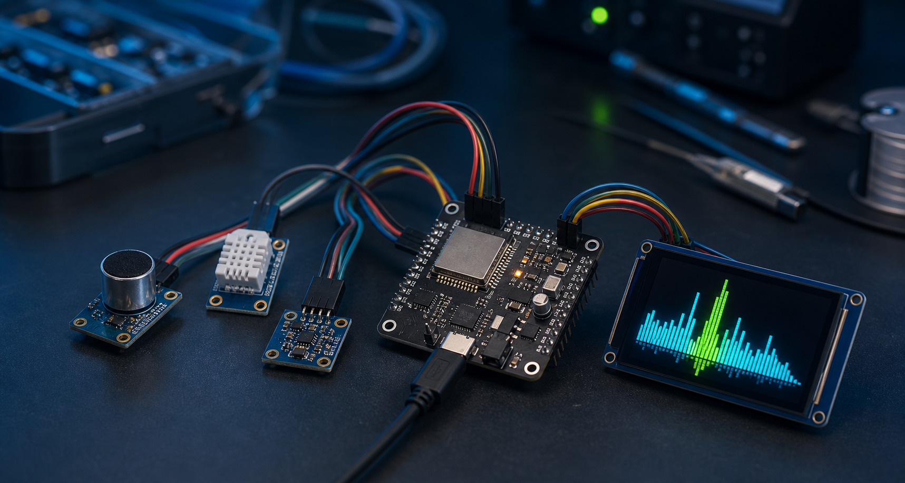

01
Continuous Data
Sensors produce data all the time, even when nothing important is happening.
Adaptive Edge Intelligence for Low-Power IoT Devices
CAAD-Gate is a reusable adaptive data-gating framework for ESP32-class IoT devices. It learns normal sensor behaviour and forwards only meaningful, abnormal, or contextually important data to machine learning, alerts, logging, or communication.
CAAD-Gate helps IoT devices know when not to process.

IoT devices continuously receive sensor data, but most data is normal. Running machine learning, communication, alerts, or logging for every data window wastes resources.
Sensors produce data all the time, even when nothing important is happening.
Only a small part of the sensor stream may contain a useful or abnormal event.
One fixed threshold cannot fit every user, room, machine, or environment.
Unnecessary ML and communication can waste CPU, memory, battery, and bandwidth.
CAAD-Gate learns normal sensor behaviour, measures change, adjusts its threshold using context, and decides whether each sensor window should be forwarded or rejected.
“CAAD-Gate does not replace ML. It protects ML from unnecessary data.”
Continuous sensor data is divided into small windows.
Level, variation, rate of change, peak, and duration are extracted.
The device learns a baseline for the current sensor and environment.
The decision boundary changes according to learned normal behaviour.
Battery, urgency, user mode, and environment can change sensitivity.
Normal data is rejected. Useful or abnormal data is forwarded.
The sensor adapter can change while the CAAD-Gate core remains the same.
Detects meaningful sound windows before classification. Suitable for alarms, knocks, assistive hearing, and smart-home sound monitoring.
Sound ModuleLearns normal movement and forwards possible fall, abnormal motion, or long inactivity windows for further analysis.
Motion ModuleOpens the gate during sudden change, abnormal drift, or unusual operating conditions in industrial or environmental systems.
Environment ModuleThe first validation used the ESC-50 environmental sound dataset. The adaptive gate reduced unnecessary frame-level processing while keeping recognition results close to the fixed-threshold baseline.
| Method | Coverage | Processing Reduction | MFBE Top-1 | MFBE Top-5 |
|---|---|---|---|---|
| Fixed baseline | 93.50% | Not measured in the same sheet | 25.94% | 46.29% |
| Adaptive CAAD-Gate | 78.50% | 65.33% | 24.50% | 46.04% |
Interpretation: lower coverage shows a tunable trade-off. A product may use a high-sensitivity mode for better event coverage or a low-power mode for stronger processing reduction.
The demo learns background sound, calculates an adaptive threshold, and opens the gate only when a meaningful sound event occurs.
Explore the complete V1 framework, reusable core, LilyGO demonstration sketch, and technical documentation package.
Core engine, sensor modules, examples, and documentation.
Download ZIPReusable sensor-independent adaptive decision engine.
Download CoreESP32/LilyGO sound-gate display demonstration.
Download SketchTheory, module reference, architecture, and experiment summary.
Read DocumentationEach sensor module extracts lightweight features. The core engine uses those features to decide whether the gate should open or close.
CAADFeatures features = sensorModule.extractFeatures(sensorData);
CAADDecision decision = gate.update(features);
if (decision.gateOpen) {
// Run ML, alert, communication, or logging
} else {
// Save processing
}ESP32 or ESP32-S3, optional LilyGO display, sensor hardware, USB cable, and a laptop.
Arduino ESP32 board package, TFT_eSPI for the display demo, and sensor-specific libraries.
Extract the framework, copy it into Arduino/libraries, restart the IDE, open an example, and upload.
No. It is a lightweight adaptive decision layer that runs before ML or alert processing.
No. Sound is the first validation domain. The framework is designed for sound, motion, temperature, air quality, and other sensors.
No. It decides whether data should be sent to machine learning, reducing unnecessary processing.
No guaranteed claim is made. It reduces estimated downstream processing load. Direct battery measurement depends on the final hardware.
CAAD-Gate includes a working ESP32-based sound-gate demo, reusable framework files, sensor modules, documentation, experimental validation, and product applications across sound, eldercare motion, and machine or environment monitoring.
CAAD-Gate was developed by H.M. Thisara N. Herath as part of a broader research and product-development direction focused on adaptive edge intelligence for resource-constrained embedded devices.
Core engine, sound, environment and motion modules, ESP32 examples, and initial validation.
Improved display, battery-aware modes, confidence scoring, class-specific thresholds, and event history.
Cloud dashboard, OTA updates, Arduino library release, multi-device aggregation, and edge-ML integration.
Use this form for research discussion, developer testing, or possible product integration.